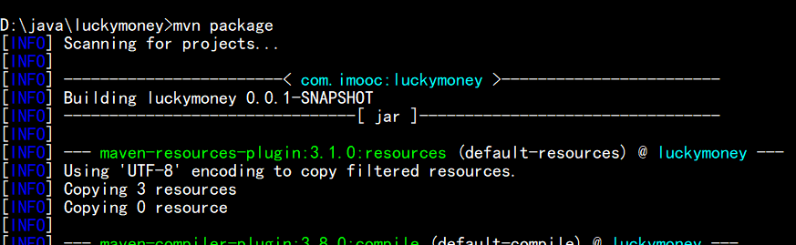

1.我的服务器配置
2.准备工作
①下载压缩包
- 下载 tomcat8：https://tomcat.apache.org/download-80.cgi
- 下载 maven：http://maven.apache.org/download.cgi
- 下载 redis5：https://redis.io/download

②下载 Xftp6
Xftp6 是一款功能强大，主要用于 SFTP、FTP 文件传输的软件，能够帮助用户安全地在 UNIX/Linux 和 Windows PC 之间传输文件。
我们需要使用此软件，将压缩包上传至阿里云服务器。
- 请自行搜索安装包 下载并安装
③添加安全组规则
服务器的安全组默认未设置任何自定义放行规则，这将会导致无法访问实例端口，若需访问需要添加安全组规则放行对应的端口。
- 我们需要放行常用的端口号：8080、3306、22、6379 等
- 添加安全组规则：
④上传压缩包至服务器
- 打开 Xftp6 工具 点击
文件–新建 - 按下图填写信息并连接服务器
- 然后在 /usr/local/ 目录下新建 javaweb 文件夹 将压缩包上传到此文件夹中
⑤设置防火墙
防火墙是系统的第一道防线，其作用是防止非法用户的进入。
服务器的防火墙默认未设置任何自定义放行规则，这将会导致无法访问实例端口，若需访问需要防火墙放行对应的端口。
注意：CentOS7 默认使用 firewalld 作为防火墙。
1 | firewall-cmd --state # 查看防火墙状态 |
3.安装 jdk8
注意：若服务器版本是 CentOS7 系列，尽量不要安装系统自带的 openJDK (会有坑)！
①解压安装包
1 | cd /usr/local/javaweb # 进入该目录 |
②配置环境
- 使用
vim命令打开文件
1 | vim /etc/profile # 配置环境变量 |
- 然后按
i进入编辑模式 插入以下文字
1 | export JAVA_HOME=/usr/local/javaweb/jdk8 # jdk所在位置的绝对路径 |
- 最后按
Esc并输入:wq回车退出
1 | source /etc/profile # 使脚本文件生效 |
③验证配置
1 | javac |
- 如果出现上图内容 说明配置成功
4.安装 tomcat8
①解压安装包
1 | cd /usr/local/javaweb # 进入该目录 |
②启动 tomcat8
1 | cd /usr/local/javaweb/tomcat8/bin # 进入该目录 |
③验证配置
- 访问 公网ip:8080
- 如果出现上图内容 说明配置成功
5.安装 maven
①解压安装包
1 | cd /usr/local/javaweb # 进入该目录 |
②配置环境
- 使用
vim命令打开文件
1 | vim /etc/profile.d/maven.sh # 配置环境变量 |
- 然后按
i进入编辑模式 插入以下内容
1 | #!/bin/bash |
- 最后按
Esc并输入:wq回车退出
1 | source /etc/profile.d/maven.sh # 使脚本文件生效 |
③验证配置
1 | mvn -v # 查看maven版本 |
- 如果出现上图内容 说明配置成功
6.安装 MySQL5.7
①下载和安装
1 | rpm -ivh http://dev.mysql.com/get/mysql57-community-release-el7-8.noarch.rpm # 下载安装包 |
②登录 MySQL
1 | mysql -uroot -p # 登录MySQL 然后输入默认密码(系统自动生成) |
ps：如果觉得新密码太复杂，可以修改以下两个字段来降低默认的密码安全级别。
1 | set global validate_password_policy=0; 设置密码安全级别为LOW |
③远程连接
1 | GRANT ALL PRIVILEGES ON *.* TO 'root'@'%' IDENTIFIED BY '新密码' WITH GRANT OPTION; # 开启root用户的远程访问权限 |
- 使用 Navicat 远程访问数据库
- 连接后可以通过 Navicat 管理远程数据库
7.安装 redis5
①解压安装包
1 | cd /usr/local/javaweb # 进入该目录 |
②配置环境
1 | cd /usr/local/javaweb/redis5 # 进入解压后的目录 |
- 使用
vim命令打开文件
1 | vim /usr/local/javaweb/redis/redis.conf # 编辑配置文件 |
- 然后按
i进入编辑模式 编辑以下字段
1 | bind 127.0.0.1 ——> # bind 127.0.0.1 # 将此行注释掉 |
- 最后按
Esc并输入:wq回车退出 - 使用
vim命令打开文件
1 | vim /etc/init.d/redis #编辑redis开机启动脚本 |
- 然后按
i进入编辑模式 插入以下文字
1 | #!/bin/sh |
- 最后按
Esc并输入:wq回车退出 - 使用
vim命令打开文件
1 | vim /etc/rc.local # 添加开机启动服务 |
- 然后按
i进入编辑模式 插入以下文字
1 | service redis start |
- 最后按
Esc并输入:wq回车退出
③登录 redis
1 | chmod 755 /etc/init.d/redis # 设置权限 |
④验证配置
- 如果上图命令没有报错 说明配置成功
⑤远程连接
- 使用 Redis Desktop Manager 远程访问数据库
- 连接后可以通过 Redis Desktop Manager 管理远程数据库
⑥参考博客
8.部署 Springboot 项目
①打包项目
1 | 本地命令行中: |

②上传 jar 包
- 使用 Xftp6 工具上传 jar 包至服务器
③运行 jar 包
- 方式一：在当前窗口运行
1 | cd /usr/local/javaweb/springboot # 进入该目录 |
- 方式二：使 jar 包一直处于后台运行
1 | cd /usr/local/javaweb/springboot # 进入该目录 |
④验证配置
- 如上图内容 我们成功地访问了这个 springboot 项目 间接说明了配置的正确性！
- Ctrl + v：停止运行项目
附录
- 我的个人博客：messi1002.top
- 如有错误或疑惑之处 请联系 wjymessi@163.com